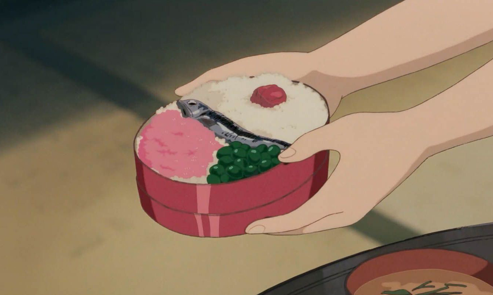
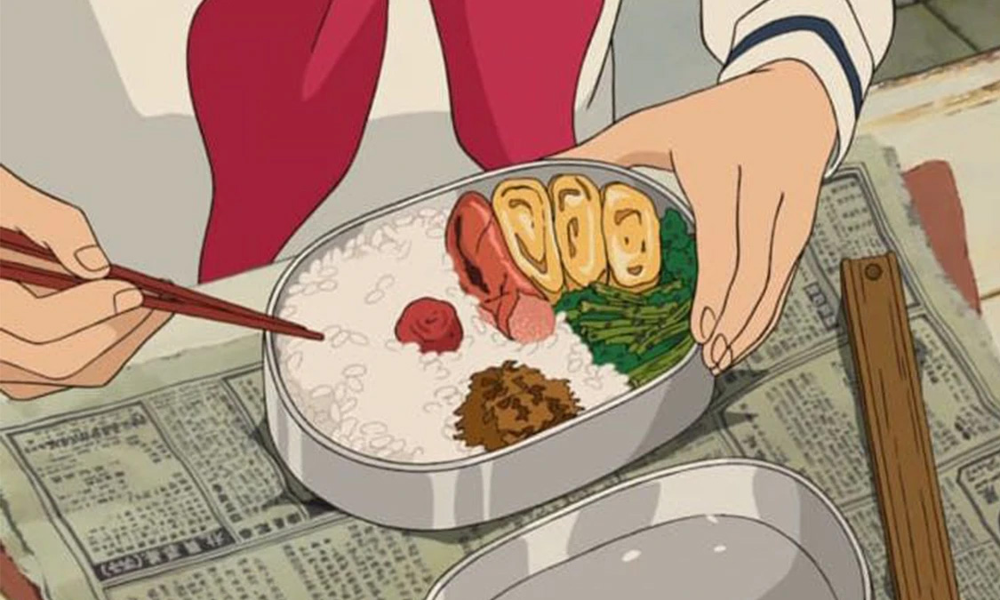

my neighbour
totoro: bento box


Bento boxes are Japan's style of a packed meal, so of course they would need to make at least one appearance in a Studio Ghibli film. In fact, there are a few films that have some of the most appetizing bento boxes in animated history.
One of the most famous bento boxes from Studio Ghibli are the bentos that Satsuki makes for her family in My Neighbor Totoro. From Up on Poppy Hill and Ocean Waves also have a few mouthwatering bentos which often consists of meat, vegetables, and rice or noodles.